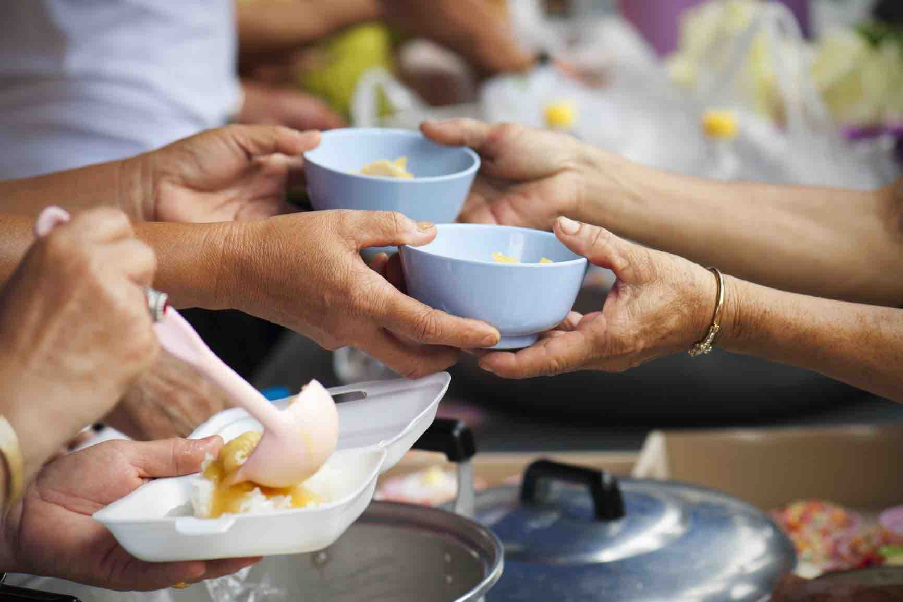

¿Qué hacemos?
- Capacitación en Agricultura Sostenible
- Huertos Comunitarios y Urbanos
- Distribución de Alimentos Nutritivos
- Educación y Sensibilización
- Desarrollo de Capacidades en Mujeres Rurales

¿Cómo ayudamos?
- Asistencia Directa
- Capacitación en Técnicas Sostenibles
- Incentivos para la Autosuficiencia Alimentaria
- Alianzas Estratégicas
- Programa de Voluntariado